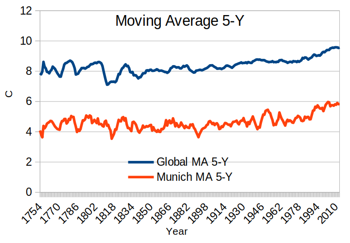

Explore Weather Trends
The data extracted from three provided tables:
I first found the closest available city in city_names table by finding available cities for Germany:
SELECT * FROM city_list WHERE country='Germany';
This returned:
The
closest city to my place (Friedrichshafen) is Munich.
Extract the local temperature data (for Munich)
The following SQL line returns the table (only few rows shown here):
SELECT year, avg_temp FROM city_data WHERE city ='Munich';
Extract
the global temperature data
The following SQL line returns the table (only few rows shown here):
SELECT * FROM global_data;
The
tables are saved into CSV files.
I used Libreoffice Calc for reading the CSV files and manipulate the data in spreadsheets. The following steps are taken:
Merge the data in one spreadsheet table
Consider
the dates with valid data for both global and local temperature
The
rows with any null data are excluded
Plot the yearly temperature
The
plot is very spiky and it is not easy to see the trend on these
curves.
Plot the Moving Average data for 10-year window
Moving average with 5 and 10 years window are calculated:
The curves for MA-10 Y are smooth enough to show the trends:
5Y Window

10Y Window
The following questions are answered based on the observations:
Is Munich hotter or cooler on average compared to the global average? Has the difference been consistent over time?
The temperature for Munich is colder than the global temperature about 2°C in a more or less consistent way.
“How do the changes in Munich’s temperatures over time compare to the changes in the global average?”
In
general Munich’s temperature follows the global trend over time.
In some few cases, like those depicted here, the trend is different
locally in Munich and globally.
What does the overall trend look like? Is the world getting hotter or cooler? Has the trend been consistent over the last few hundred years?
Overally the temperature is increasing both locally and globally. The trend is increasing more sharply since mid 19th century ( could be related to the industrial revolution).